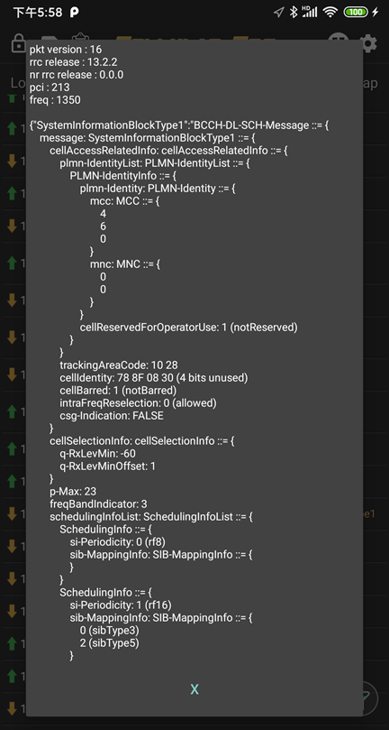
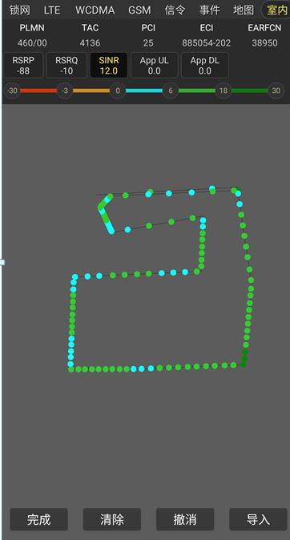

Cellular-Pro产品说明书
Cellular-Pro是一款专业的便携式路测产品。提供锁网，锁频，参数解码，信令解码，室外，室内轨迹测试，
工参导入，基站查询，任务测试，日志记录，文件回放等众多功能
一、功能区展示

-
冻结屏幕-提供内存回放功能
-
卡槽切换-双卡参数切换
-
任务配置-提供呼叫、HTTP、FTP、PING等业务功能
-
文件录制-记录测试文件
-
设置-提供会员购买、工参导入、回放、一键上报、文件格式选择等功能
二、锁网锁频
锁网提供2G/3G/4G/5G 这几个网络进行选择，方便测试人员进行不同网络下的测试工作。
锁频包括锁频段（BAND），锁频点，锁PCI这三个选项。
频段是LTE里面最大的集合，一共有64个，国内常用频段有1，3，5，8，34，38，39，40，41。
每个频段下有若干中心频点，而每个小区实际有频点和PCI共同组成。
锁频点支持同时输入2个值。
锁功能对于基站验证是必不可少的手段，锁操作会造成手机脱网和重新注册
备注：通过切换界面左上角的卡槽，达到双卡锁频操作。
当前设备支持哪些频段可以在“设备”里面获取
三、参数视图
参数视图包括NR5G，LTE，WCDMA，GSM这三个部分。参数直接反应的是手机和基站及核心网之间的交互内容，
据有重要的意义。常用的参数有小区配置，物理层测量，服务小区和邻区信号强度对比，语音（包括VOLTE），
数据吞吐率，资源分配等。多载波的情况还需要有辅载波的各种配置及信号。各个参数的说明参考“参数说明”
备注：比较新的版本只会显示当前驻留的网络，如果导入工参后小区和邻区下面会显示工参的名称和距离

四、信令视图
信令是手机和基站之间交互的核心内容。各种测量信息的上报，测量的控制都是通过信令来反应的。
从方向上信令分为上行（手机到基站），下行（基站到手机）这两个方向。信令是分层的。
以LTE为例，可以分为RRC,ESM,EMM。RRC的信令又通过逻辑信道进行再分类。
备注：点击右下角的信令过滤图标可以对不同类型的信令进行过滤。
目前APP仅仅支持层三的消息，层1，层2的内容需要有工具进行分析。


备注：点击右上角的导出图标，可以批量导出信令。
五、室外地图
室外地图通过GPS及参数共同渲染的轨迹图，包括RSRP，SINR，RSRQ，速率等。
可以很直观的看到目前覆盖及情况，如果此时导入了工参，将会展示附近的基站。
点击参数颜色设置条可以进行参数范围及颜色设置。
备注：室外地图需要用户打开GPS，需要APP在后台连续采集到GPS轨迹要关闭省电模式
六、室内地图
室内地图主要做室内信号覆盖分析，由于室内没GPS的精确点，所以才用手动打点的方式进行。
任务执行的时候，如果选择室内模式，则文件将记录打点信息。测试任务结束的时候，需要点击
“完成”，完成后会保存当前打点的截图（jpg文件）。
备注：如果需要保存轨迹点到文件中需要采用CSV或者DTLOG（.lte,.l5g）格式

七、工参管理
工参目前支持LTE/WCDMA/GSM这3种制式的导入，删除，查询等管理工作。
导入文件必须是CSV格式（逗号分割符号文件),如果是XLS的文件，需要先另存为CSV,字符格式选择UTF-8。
导入的时候需要进行字段匹配，从左边的固定字段中选择指定的字段，
比如“经度”，然后从文件字段中选择“经度”，以此类推，直到所有的字段都匹配完毕。

八、测试任务
目前提供FTP上传，下载，PING，视频，网页，主叫，被叫这几种业务，
测试过程种会有路测要求的规范事件产生，同时也会有KPI指标统计分析。
备注：高级会员测试无时间限制

九、设置功能
设置功能包括：会员购买，工参管理，LOG回放，文件管理，文件格式选择，一键上报，LOG保存设置，强制功能选择等
文件回放如下图展示